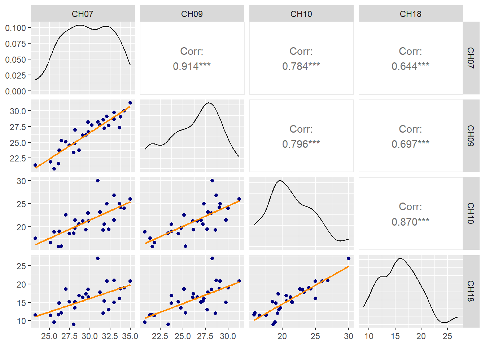
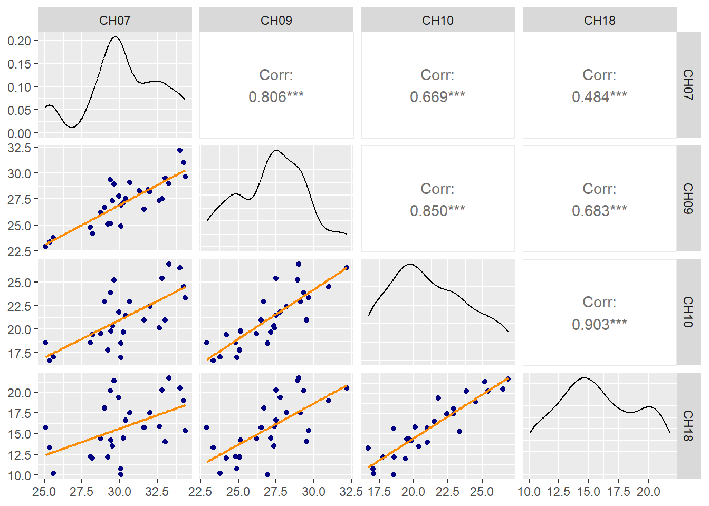

Code
library(tidyverse)
library(plotly)
library(corrplot)
library(GGally)
source(here::here("functions.R"))
in_path <- here::here("data", "processed")Mean nursery period salinity was calculated for each shrimp year, based on species, at each of four SCDNR estuarine trawling stations: CH07, CH09, CH10, and CH18.
We as a group didn’t have a chance to decide which station would be most appropriate to use (or if an average would be better), so below I’m setting up the framework using CH10 - because it’s on the lower side of the salinities, possibly more representative of the habitats of young shrimp, but not the very lowest station. If you want to use another station or a mean later, you should be able to plug it in more easily than starting from scratch.
Nursery period salinities are generally pretty well correlated with each other.
Following Batchelder et al. 2024, nursery period was defined as Apr-July for brown shrimp and June-Oct for white shrimp.
library(tidyverse)
library(plotly)
library(corrplot)
library(GGally)
source(here::here("functions.R"))
in_path <- here::here("data", "processed")Read in data; trim to only common years; put life stages in proper order; select only salinity columns (get rid of winter).
# brown
brn_all <- read.csv(here::here(in_path, "brn_abundAndEnv.csv"))
brn <- brn_all |>
filter(shrimp_year %in% common_shrimpYears) |>
mutate(life_stage = factor(life_stage, levels = ls_order_brn)) |>
rename(abundIndex = abundanceIndex_commonTimePeriod) |>
select(survey:nursery_sal.mean07.09.10)
brn_wide <- brn |>
select(shrimp_year, life_stage, abundIndex) |>
pivot_wider(names_from = life_stage,
values_from = abundIndex)
brn_sals <- brn |>
select(shrimp_year, starts_with("nursery_sal")) |>
distinct() |>
pivot_longer(all_of(starts_with("nursery_sal")),
names_to = "Station",
names_prefix = "nursery_sal.",
values_to = "Salinity")
# white
wht_all <- read.csv(here::here(in_path, "wht_abundAndEnv.csv"))
wht <- wht_all |>
filter(shrimp_year %in% common_shrimpYears) |>
mutate(life_stage = factor(life_stage, levels = ls_order_wht)) |>
rename(abundIndex = abundanceIndex_commonTimePeriod) |>
select(survey:nursery_sal.mean07.09.10)
wht_wide <- wht |>
select(shrimp_year, life_stage, abundIndex) |>
pivot_wider(names_from = life_stage,
values_from = abundIndex)
wht_sals <- wht |>
select(shrimp_year, starts_with("nursery_sal")) |>
distinct() |>
pivot_longer(all_of(starts_with("nursery_sal")),
names_to = "Station",
names_prefix = "nursery_sal.",
values_to = "Salinity")Set up colors and shapes.
# for life stages
palcols <- khroma::color("oslo", reverse = TRUE)(12)[3:11]
shps <- c(16, 15, 17, 9, 2, 1, 0, 5)p <- ggplot(filter(brn_sals, Station != "mean07.09.10"),
aes(x = shrimp_year,
y = Salinity,
col = Station,
shape = Station)) +
geom_point(size = 2, alpha = 0.7) +
geom_line() +
theme_bw() +
labs(x = "Shrimp Year",
y = "Mean Nursery Period Salinity (ppt)")
plotly_out(p, "right")brn |>
select(CH07 = nursery_sal.CH07,
CH09 = nursery_sal.CH09,
CH10 = nursery_sal.CH10,
CH18 = nursery_sal.CH18) |>
ggpairs(upper = list(continuous = wrap("cor",
method = "spearman")),
lower = list(continuous = wrap(lowerFn)))
stages <- unique(brn$life_stage)
corrs_out <- list()
corrs <- for(i in seq_along(stages)){
stg <- stages[i]
tmp <- filter(brn, life_stage == stg)
cor.all <- cor.test(tmp$abundIndex, tmp$nursery_sal.CH10,
use = "pairwise.complete.obs",
method = "spearman")
out <- data.frame(
life_stage = stg,
coef = round(cor.all$estimate, 3),
pval = round(cor.all$p.value, 3),
row.names = NULL
)
corrs_out[[i]] <- out
}
corrs_all <- bind_rows(corrs_out)knitr::kable(corrs_all,
col.names = c("Life Stage",
"Spearman's Rho Estimate",
"p-value"))| Life Stage | Spearman’s Rho Estimate | p-value |
|---|---|---|
| postlarval | 0.188 | 0.338 |
| juvenile | -0.322 | 0.094 |
| subadult | -0.077 | 0.697 |
| adult | 0.301 | 0.119 |
| adult.landings | -0.344 | 0.073 |
p <- ggplot(wht,
aes(x = nursery_sal.CH10,
y = abundIndex,
col = life_stage,
shape = life_stage,
group = life_stage)) +
geom_hline(yintercept = 0,
col = "gray40",
linewidth = 0.5) +
geom_point() +
geom_smooth(method = "lm", se = FALSE,
alpha = 0.6, linetype = "dashed",
linewidth = 0.8) +
theme_bw() +
theme(legend.position = "none") +
scale_color_manual(values = palcols) +
scale_shape_manual(values = shps) +
facet_wrap(~life_stage, ncol = 1) +
labs(x = "Nursery period salinity at CH10",
y = "Abundance Index")
plotly_out(p)p <- ggplot(filter(wht_sals, Station != "mean07.09.10"),
aes(x = shrimp_year,
y = Salinity,
col = Station,
shape = Station)) +
geom_point(size = 2, alpha = 0.7) +
geom_line() +
theme_bw() +
labs(x = "Shrimp Year",
y = "Mean Nursery Period Salinity (ppt)")
plotly_out(p, "right")wht |>
select(CH07 = nursery_sal.CH07,
CH09 = nursery_sal.CH09,
CH10 = nursery_sal.CH10,
CH18 = nursery_sal.CH18) |>
ggpairs(upper = list(continuous = wrap("cor",
method = "spearman")),
lower = list(continuous = wrap(lowerFn)))
stages <- unique(wht$life_stage)
corrs_out <- list()
corrs <- for(i in seq_along(stages)){
stg <- stages[i]
tmp <- filter(wht, life_stage == stg)
cor.all <- cor.test(tmp$abundIndex, tmp$nursery_sal.CH10,
use = "pairwise.complete.obs",
method = "spearman")
out <- data.frame(
life_stage = stg,
coef = round(cor.all$estimate, 3),
pval = round(cor.all$p.value, 3),
row.names = NULL
)
corrs_out[[i]] <- out
}
corrs_all <- bind_rows(corrs_out)knitr::kable(corrs_all,
col.names = c("Life Stage",
"Spearman's Rho Estimate",
"p-value"))| Life Stage | Spearman’s Rho Estimate | p-value |
|---|---|---|
| postlarval | -0.232 | 0.243 |
| juvenile | 0.359 | 0.066 |
| subadult | -0.376 | 0.053 |
| adult.nonspawning | 0.243 | 0.222 |
| adult.spawning | 0.156 | 0.436 |
| adult.nonspawning.landings | -0.020 | 0.923 |
| adult.spawning.landings | -0.095 | 0.638 |
p <- ggplot(wht,
aes(x = nursery_sal.CH10,
y = abundIndex,
col = life_stage,
shape = life_stage,
group = life_stage)) +
geom_hline(yintercept = 0,
col = "gray40",
linewidth = 0.5) +
geom_point() +
geom_smooth(method = "lm", se = FALSE,
alpha = 0.6, linetype = "dashed",
linewidth = 0.8) +
theme_bw() +
theme(legend.position = "none") +
scale_color_manual(values = palcols) +
scale_shape_manual(values = shps) +
facet_wrap(~life_stage, ncol = 1) +
labs(x = "Nursery period salinity at CH10",
y = "Abundance Index")
plotly_out(p)Input .qmd file for this section was: rel_sal.qmd and can be found in the main directory.
Input data file(s) - in data/processed:
brn_abundAndEnv.csvwht_abundAndEnv.csv